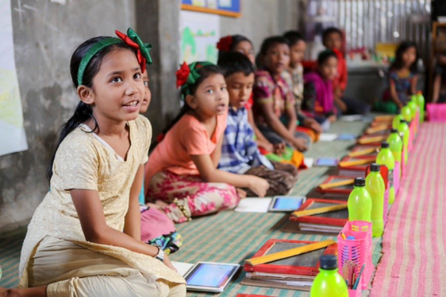

Non-formal Education (NFE) consists in a gathering of educational practices which are not included in the formal system of education. This branch of education promotes non-formal learning.
As one author says: „ According to my dictionary (Webster’s, 1988) “non-” is a prefix which means “not: absence of; reverse of”… in other words the “opposite of’ something. But nonformal education is not the opposite of formal education. In many ways they are similar or overlap.
